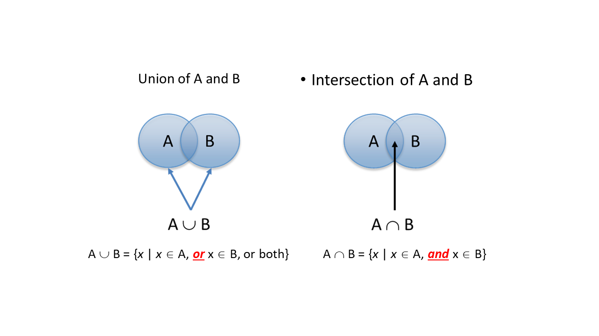
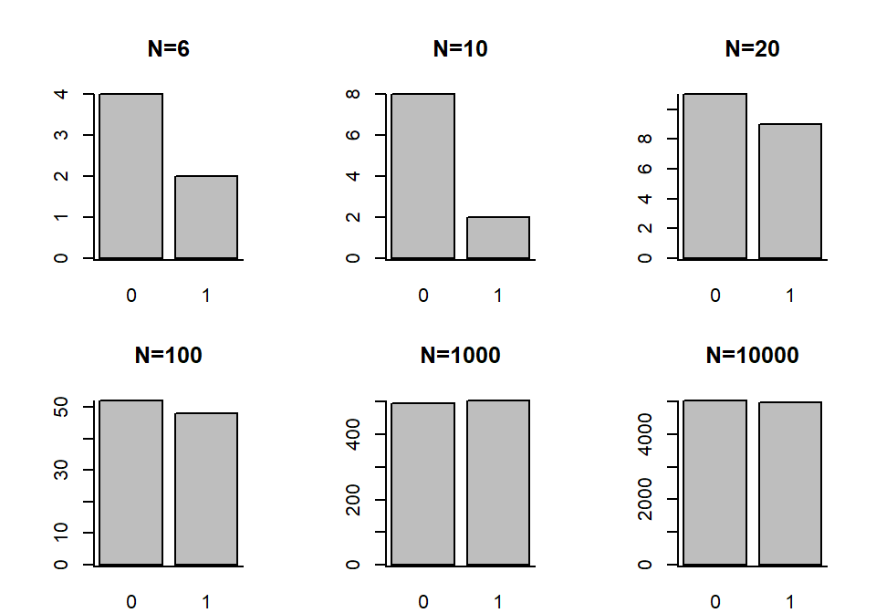
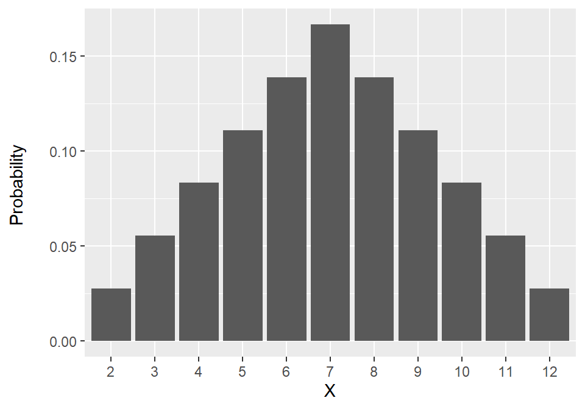

Probability (1)
Data Analysis for Psychology in R 1
Tom Booth
Click for handout
Today
- Why do we need probability?
- Some concepts about sets
- Assigning probability - basic rules
Learning objectives
- Understand the link between probability, models and data
- Understand the basic rules of probability
- (From lab) being able to apply these rules
Why probability?
- Consider the statements:
- There is a 50\50 chance of a fair coin landing on Heads
- There is a \(\frac{13}{52}\) chance of drawing a heart in a deck of cards
- In both cases, we are presenting something based on known information about the world.
- We have a model for the world.
- But we do not have data.
- We do not have some results from tossing a coin.
Why probability?
- In statistics and data analysis, the opposite is true.
- We have some data, but we do not know the truth of the world
- We have to make inferences about it.
- In order to make these inferences, we are going to use probability, and models of the world based on it.
- But before we do, we need to build up some concepts.
Sets
- Probabilty is built on the theory of sets.
- Set: Well-defined collection of objects
- Sets are composed of elements or members
- E.g. students in class
- E.g. real numbers between 0 and 1
Set notation
- \(d \in D\)
- d is an element of D
- \(e \notin D\)
- e is not an element of D
- F = {f \(\mid\) f in an integer, \(1 \leq f \leq 10\)}
- F includes elements such that f is an integer greater tan or equal to 1 and less than or equal to 10.
Sets
- Universal Set: A set of all elements we are concerned with.
- Subset: A Set B is a subset of A if and only if every \(x \in B\), then \(x \in A\)
- \(B \subseteq A\), B is a subset of A
- Proper subset: a Set B is a proper subset of A if B is a subset of A and at least one member of A is NOT a member of B
- \(B \subset A\), B is a proper subset of A
Sets: and or

Sets: Empty, complement, difference

- Key point on empty sets: P and R here are mutually exclusive
- If P occurs, R cannot occur.
Does some of it seem familiar?
- Working with sets is often referred to as Boolean algebra
- You have some across this when you work with logicals in R.
Sets & Probability
- In probability we talk about a sample space
- Sample space (S) = all possible outcomes.
- Every point in this sample space is a single outcome.
- An event (A)is a set of outcomes from S
- A simple event (a) = single point such that \(a \in S\)
- Random experiment = sampling of simple events from a sample space.
Defining probability
- Long run frequency: Frequentist statistics.
- Degree of belief: Bayesian statistics.
- We will be working with (1), but it is important to know there are different schools of thought as these relate to how we use statistics in practice and make inferences.
Defining probability
- Analytic definition of probability:
- If there are \(a\) ways in which \(x\) can occur and \(b\) ways in which \(x\) can fail to occur, then \(P(x) = a/(a+b)\)
- If a bag contains 85 light and 15 dark caramels and you reach into the bag randomly and grab a caramel, P(light) = 85/(85+15) = .85 (or 85%)
- If there are \(a\) ways in which \(x\) can occur and \(b\) ways in which \(x\) can fail to occur, then \(P(x) = a/(a+b)\)
Defining probability
- \(P(x)\), or probability of x, is the proportion of times you would observe \(x\) if you took an infinite number of samples.
- If I roll a die an infinite number of times, the probability I would roll a 1 would be exactly 1/6.
- The long run, or the law of large numbers
- Given an event \(A\) and a probability \(P(A)\), over N trials, the probability that the relative frequency of \(A’\) will differ from \(P(A)\) approaches 0 as N approaches infinity
Coin toss

Example
- Suppose we have the following experiment.
- We roll two die.
- The outcome is the sum of the numbers on the upward pointing space.
Example: Sample Space
| 1 | 2 | 3 | 4 | 5 | 6 | |
|---|---|---|---|---|---|---|
| 1 | 2 | 3 | 4 | 5 | 6 | 7 |
| 2 | 3 | 4 | 5 | 6 | 7 | 8 |
| 3 | 4 | 5 | 6 | 7 | 8 | 9 |
| 4 | 5 | 6 | 7 | 8 | 9 | 10 |
| 5 | 6 | 7 | 8 | 9 | 10 | 11 |
| 6 | 7 | 8 | 9 | 10 | 11 | 12 |
Example: Probabilities
| Simple Event | 2 | 3 | 4 | 5 | 6 | 7 | 8 | 9 | 10 | 11 | 12 |
|---|---|---|---|---|---|---|---|---|---|---|---|
| Frequency | 1 | 2 | 3 | 4 | 5 | 6 | 5 | 4 | 3 | 2 | 1 |
| Probability | \(\frac{1}{36}\) | \(\frac{2}{36}\) | \(\frac{3}{36}\) | \(\frac{4}{36}\) | \(\frac{5}{36}\) | \(\frac{6}{36}\) | \(\frac{5}{36}\) | \(\frac{4}{36}\) | \(\frac{3}{36}\) | \(\frac{2}{36}\) | \(\frac{1}{36}\) |
Example: Probability Distribution

Rules of Probability
- \(P(i)\) = probability of event \(i\)
- \(0 \leq P(i) \leq 1\) = probability of event \(i\) is between 0 and 1
- \(P(i_1) + P(i_2) + ... + P(i_n) = P(S)\) = probability of all events in sample space \(S\) = 1
- \(P(i) + P(\sim i) = 1\), so \(P( \sim i) = 1 - P(i)\)
Joint Probability
- Probability of A and B = \(p(A \bigcap B)\)
- Joint event or intersection of A and B
- Probability of A or B = \(p(A \bigcup B)\)
- Union of A and B
- Probability of not A = \(p(\sim A)\)
- We describe the event not A as the complement of A.
Relations between events
- Mutually exclusive events: If A occurs, B can not occur.
- Independent events: The occurance of event A does not impact event B.
- Dependent events: The occurance of event A does impact event B.
- By impact, I am referring to changes in the probability of the events.
Probabilities of joint events
- For mutually exclusive events, the probability of the union of those events is the sum of the individual probabilities.
- Think of the coin example:
\[p(Head \bigcup Tails) = p(Head) + p(Tails) = 0.5 + 0.5 = 1.0\]
Probabilities of joint events
- For non-mutually exclusive events.
\[p(A \bigcup B) = p(A) + p(B) - p(A \bigcap B)\]
- Why might this be so?
\[p(king or heart) = \frac{4}{52} + \frac{13}{52} - \frac{1}{52} = \frac{4}{13} = 0.31\]
Probabilities of joint events
- So far we have looked at rules for unions (or), but what about intersections (and) events:
- If events are independent, then;
\[p(A \bigcap B) = p(A)p(B)\]
- Consider getting a success (Head) in a coin flip (event A), and cutting the deck on a heart (event B).
\[p(A \bigcap B) = \frac{1}{2} * \frac{1}{4} = \frac{1}{8} = .125 = 12.5%\]
Sampling: With and without replacement
- In the lab there were examples of the use of
sample()withreplace=Tandreplace=F - What does this mean?
- Imagine a bag of balls, 6 red 4 blue.
- We take 1 ball
- \(p(red) = \frac{6}{10} = \frac{3}{5}\) = 0.60
- \(p(blue) = \frac{4}{10} = \frac{2}{5}\) = 0.40
Sampling: With and without replacement
- If we put the ball back, then the probabilities are the same next draw.
- If we keep the ball, then the probabilities change.
- If we assume it was red, then;
- \(p(red) = \frac{5}{9}\) = 0.56
- \(p(blue) = \frac{4}{9}\) = 0.44
- If we assume it was red, then;
Sampling: With and without replacement
- This matters with respect to thinking about multiple trials.
- If we draw two balls from the sample, what is the probability they are both red?
- As long as the events are independent, then:
- With replacement = 0.6*0.6 = 0.36 = 36%
- Without replacement = 0.60*0.56 = 0.34 = 34%
Tasks for this week…
- Finish any existing tasks from labs.
- Reading: See LEARN
- Quiz 8 on R functions
- This quiz counts
- Live now (as of Monday at 09:00).
- Closes Sunday at 17:00
Recommendations of the week
- To follow.